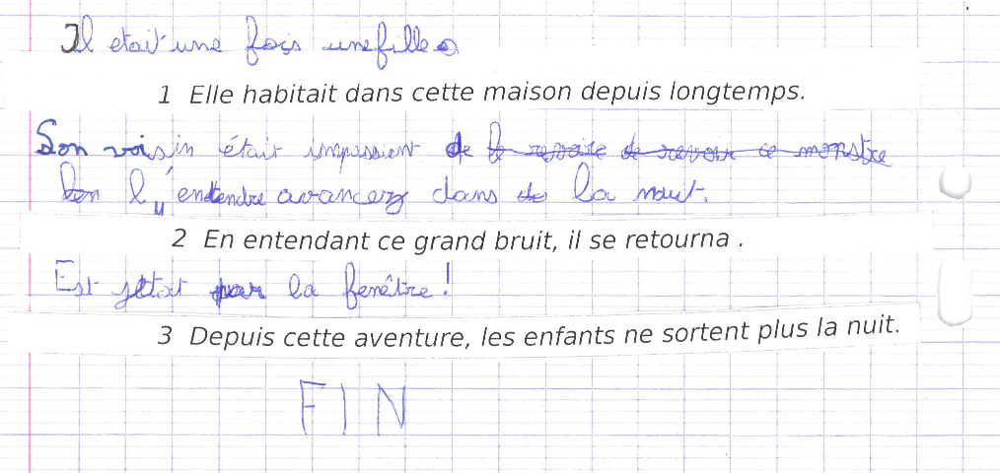

Cette page décrit les différentes étapes du processus de constitution de la ressource, de la transcription à sa normalisation puis à l'annotation.
Ces étapes sont illustrées dans le schéma ci-dessous.
Les principales étapes sont :
L'originalité du corpus ResolCo réside dans le fait que les textes produits répondent tous à une même consigne d'écriture.
Celle-ci est une tâche-problème imposant aux élèves la résolution de problèmes de cohésion textuelle (Garcia-Debanc et Bonnemaison, 2014 ; Garcia-Debanc et Bras, 2016).
L'objectif de cette consigne, fournie ci-dessous, est de provoquer chez le scripteur la mise en oeuvre de stratégies de résolution des problèmes de cohérence soulevés par l'intégration de trois phrases dans un récit.
|
Consigne : Racontez une histoire dans laquelle vous insérerez, séparément et dans l'ordre donné, les trois phrases suivantes :
Vous pouvez découper les bandelettes contenant les phrases ci-dessous ou bien recopier chaque phrase avec soin à l'identique de celles qui vous sont données. |
Ci-dessous un exemple de texte récoltée en 2016 dans une classe de CE2. . |
Les trois phrases impliquent des stratégies discursives variées, amenant le scripteur à gérer plusieurs continuités référentielles et planifier son discours afin d'assurer la cohérence de son texte (Garcia-Debanc et al. 2017).
Les textes sont ensuite numérisées au format .png pour la collecte des données.
Il est possible de contribuer à la récolte des textes en utilisant la consigne et les documents nécessaires à la collecte des textes. Cette consigne et ces documents sont disponibles au format .pdf au lien suivant : documents pour la récolte des textes d'élèves.
Afin de transformer les textes en une ressource exploitable par la communauté scientifique, et y appliquer des méthodes de linguistique de corpus et de TAL, il est nécessaire de passer par une étape de transcription des scans de textes.
Le format choisi pour la transcription est le format XML, selon la norme TEI-P5.
Toute transcription est anonymisée et assortie de métadonnées fournissant des informations sur la collecte et la numérisation du texte, sur les conditions d'écriture et sur l'école qui a participé à la récolte des textes. La vérification est effectuée par un correcteur différent du transcripteur.
Pour ce qui concerne le corps du texte, l'objectif de la transcription est de reproduire le plus fidèlement possible le texte de l'élève ou de l'étudiant. Afin d'obtenir une reproduction fidèle, la mise en page ligne par ligne est renseignée ainsi que toute trace du processus d'écriture comme les ratures, les ajouts, les soulignements, etc. Aucune erreur d'orthographe n'est corrigée lors de la transcription.
Pour plus de détails sur les éléments transcrits et les balises utilisées vous pouvez consulter :
Cette phase consiste à l'étiquetage des erreurs d'orthographe grâce à l'interface d'annotation Glozz (Widlöcher A. and Mathet Y., 2009).
Pour ce qui concerne l'annotation des erreurs d'orthographe, il a été décidé de ne pas classer les erreurs. En effet, la catégorisation des erreurs orthographiques sera effectuée par les experts du projet E-Calm qui travaillent sur l'orthographe.
La normalisation du corpus ResolCo est effectuée par des annotateurs francophones.
En cas d'incertitude, les annotateurs peuvent indiquer une incertitude concernant la détection et/ou la correction de l'erreur.
Si plusieurs solutions de correction sont possibles, elles sont indiquées.
Toute normalisation est vérifiée par une personne différente de celle qui a annoté le texte.
Pour plus de détails sur les éléments normalisés et les décisions prises vous pouvez consulter :
L'étude de la cohérence discursive dans les écrits d'élèves et d'étudiants est une des tâches principales au coeur du projet E-calm. Afin d'obtenir un aperçu de la maîtrise et de l'évolution de cette compétence, l'annotation de la continuité référentielle vise à décrire de façon exhaustive et systématique les formes linguistiques utilisées pour construire la référence dans les textes.
Une annotation de chaque "maillon" des chaînes référentielles correspondant aux trois référents humains de la consigne a été effectuée pour les textes normalisées grâce à l'interface d'annotation Glozz (Widlöcher A. and Mathet Y., 2009).
L'alignement de ces textes annotés avec les textes parsés sous Stanza permet de récupérer les informations morpho-syntaxiques afin de réaliser une analyse plus fine des chaines.
Pour plus de détails concernant l'annotation ou pour explorer le corpus normalisé et annoté veuillez consulter la page Exploration CR
Site développé par Y. Bard, S. Federzoni et L.M. Ho-Dac (contact).